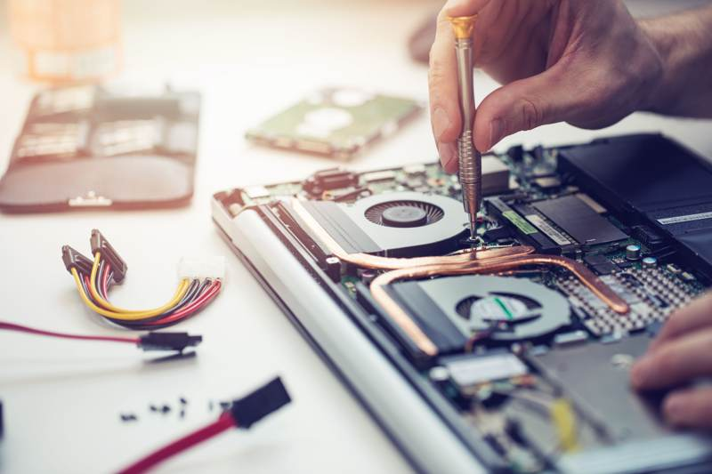

Introduction to Successful Computer Repair Stories
In today's digital age, computers are an essential part of everyday life, whether for work, study, or leisure. When these vital machines falter, it can feel like the world has come to a standstill. Fortunately, several computer repair services in Edmonton have risen to the challenge, providing top-notch solutions to their clients. Let's delve into some compelling success stories that highlight the expertise and dedication of Edmonton's computer repair professionals.

Reviving a Small Business's Operations
One of the most impressive success stories involves a small business in Edmonton that faced a complete system shutdown. The company relied heavily on its computers for daily operations, including managing inventory and processing customer orders. When their network went down unexpectedly, it seemed like disaster was imminent.
With swift action, a local computer repair service was called in. Their team worked diligently to identify the root cause of the problem, which was traced back to a critical software glitch. Through expert troubleshooting and timely intervention, they managed to restore the company's database and ensure minimal data loss. Thanks to their efforts, the business was up and running within 48 hours.
Key Takeaways
- Rapid response time is crucial in minimizing downtime.
- Effective troubleshooting can save significant amounts of data.
- Specialized expertise can turn potential disasters into successful recoveries.
Helping a Student Ace Their Semester
Another memorable story centers around a university student whose laptop crashed just days before their final exams. The student's laptop contained essential notes and project files, making its recovery critical for their academic success. In a state of panic, they reached out to a trusted repair service in Edmonton.
The technicians quickly diagnosed the problem as a hard drive failure. They managed to salvage the important data and transferred it to a new drive, ensuring that the student had access to all their study materials. This prompt and efficient service allowed the student to focus on their exams without further stress.
Lessons Learned
- Data recovery is often possible even in severe hardware failures.
- Having backups can prevent future crises.
- Timely professional help can make all the difference in urgent situations.
Restoring a Family's Digital Life
A family in Edmonton experienced a major setback when their home computer was infected with a severe virus. The malware not only disrupted their daily activities but also posed a significant risk to their personal data, including cherished family photos and important financial documents.
An experienced repair service stepped in to assist. They meticulously removed the malware and implemented robust antivirus solutions to prevent future infections. Additionally, they advised the family on best practices for data security, ensuring their digital life was better protected.
Conclusion
The successful resolution of these cases highlights the critical role that skilled computer repair services play in Edmonton. By combining technical expertise with prompt service, these professionals help keep businesses operational, students on track, and families connected. Whether facing hardware issues or battling malware, residents of Edmonton can trust these specialists to deliver effective solutions that restore peace of mind.